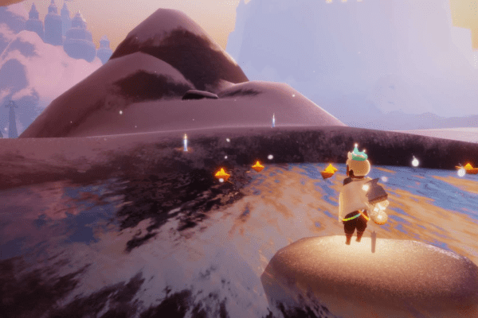
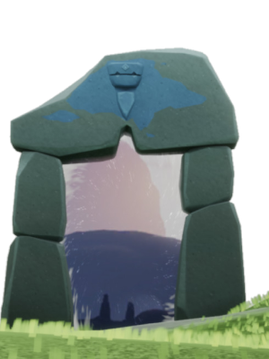
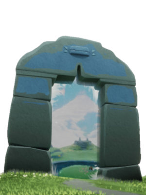
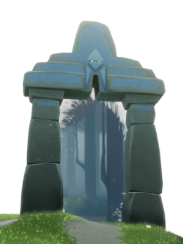
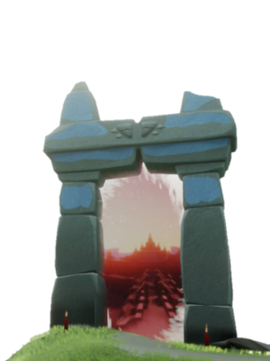
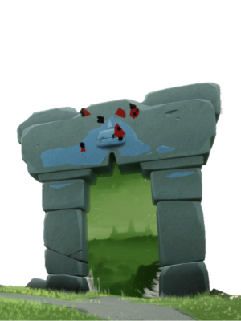
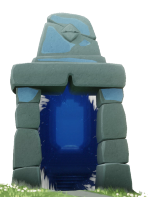
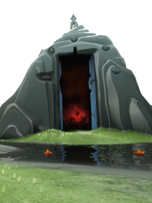

Menu
Q
Night mode
Your ideas
Unavailable
Hotkeys menu
H
Posts
Winged Light
Welcome to
Sky Tools!
Scroll or press
1
2
3
. . .
Last posts
Tasks

Visit the hot spring in Dream Village
Visit the hot spring in Dream Village
Relive a Spirit's memories in Praire
Visit the hot spring in Dream Village
Location
←
→
Isle of
Dawn

9

2
1

1
9

1
7

1
8

1
1

1
1
1
2
3
4
5
6
7
—
7